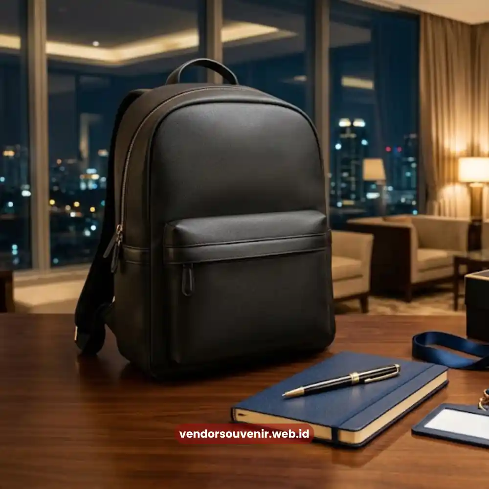
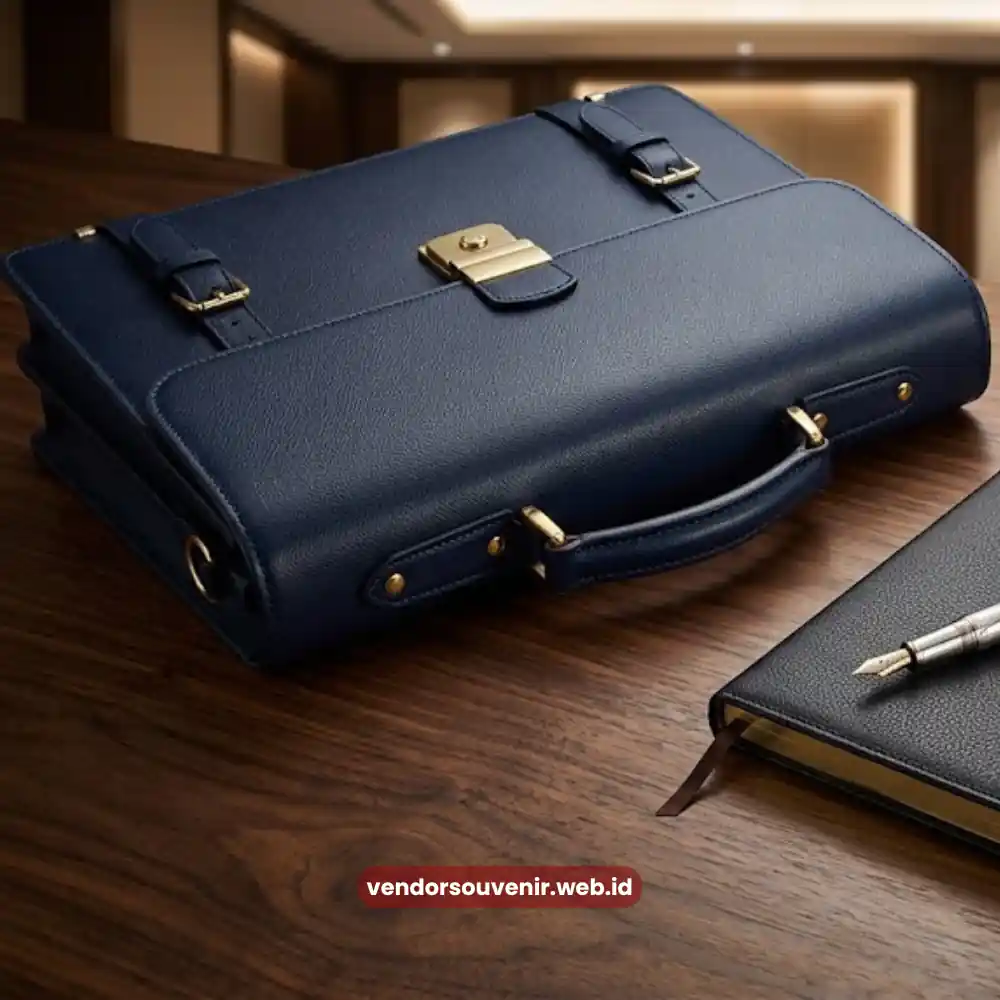

Daftar Isi
Paket seminar kit profesional Palembang adalah perlengkapan standar peserta seminar yang mencakup alat tulis, tas, dan notes bermerek perusahaan. Panduan ini menjelaskan isi paket, cara memilih vendor, dan estimasi biayanya.
Seminar kit sering kali menjadi kesan pertama peserta terhadap kualitas penyelenggaraan sebuah acara.
Karena itu, pemilihan isi paket dan vendor pengerjaannya perlu direncanakan sejak awal, bukan disiapkan mendekati hari pelaksanaan.
Apa Itu Paket Seminar Kit Profesional?
Paket seminar kit profesional adalah kumpulan perlengkapan yang dibagikan kepada peserta seminar, workshop, atau pelatihan sebagai bagian dari fasilitas acara.
Paket ini berfungsi ganda, yaitu sebagai kebutuhan praktis peserta selama acara berlangsung dan sebagai media branding penyelenggara maupun sponsor.
Untuk Siapa Seminar Kit Ini Digunakan?
Seminar kit profesional digunakan oleh panitia seminar, perusahaan penyelenggara pelatihan, lembaga pendidikan, dan event organizer yang membutuhkan perlengkapan standar bagi peserta acara formal di Palembang.
Apa Saja Komponen Standar dalam Paket Seminar Kit?
Komponen standar dalam paket seminar kit umumnya terdiri dari tas jinjing atau tote bag, buku catatan atau notes, alat tulis seperti pulpen, dan id card holder.
Sebagian penyelenggara juga menambahkan komponen pendukung sesuai kebutuhan acara.
Tas Jinjing atau Tote Bag
Tas jinjing menjadi wadah utama seluruh perlengkapan peserta sekaligus media branding yang paling terlihat selama acara berlangsung.
Pertimbangan pemilihan bahan tas untuk kebutuhan branding dapat dibaca pada artikel Bahan Tas Seminar Kit Custom.
Buku Catatan atau Notes
Buku catatan dipakai peserta untuk mencatat materi seminar dan umumnya dicetak dengan logo penyelenggara pada bagian sampulnya.
Alat Tulis
Alat tulis seperti pulpen merupakan komponen wajib yang paling sering digunakan peserta sepanjang rangkaian acara.
ID Card Holder
ID card holder membantu identifikasi peserta sekaligus menjaga ketertiban akses pada acara formal berskala besar.
Apa Saja Tambahan Opsional dalam Seminar Kit?
Tambahan opsional dalam seminar kit dapat berupa flashdisk custom, power bank, botol minum, map dokumen, hingga lanyard bermerek.
Penambahan komponen ini biasanya disesuaikan dengan anggaran serta tingkat formalitas acara yang diselenggarakan.
Bagaimana Menentukan Isi Paket yang Sesuai Anggaran?
Cara menentukan isi paket yang sesuai anggaran adalah dengan memprioritaskan komponen wajib terlebih dahulu, seperti tas dan alat tulis, sebelum menambahkan komponen pelengkap.
Penyelenggara dapat berkonsultasi dengan vendor mengenai kombinasi produk yang paling efisien tanpa mengurangi kesan profesional paket tersebut.

Tas Seminar dan Alat Tulis Korporat sebagai Komponen Wajib Seminar Kit
Bagaimana Cara Memilih Vendor Seminar Kit di Palembang?
Cara memilih vendor seminar kit di Palembang adalah dengan memeriksa portofolio pengerjaan sebelumnya, memastikan ketersediaan opsi kustomisasi logo, serta menanyakan estimasi waktu produksi.
Vendor yang berpengalaman umumnya dapat memberikan rekomendasi kombinasi produk sesuai jenis acara.
Apa yang Perlu Ditanyakan kepada Vendor Sebelum Memesan?
Hal yang perlu ditanyakan kepada vendor sebelum memesan meliputi minimum order quantity, lama waktu produksi, dan opsi bahan yang tersedia.
Selain itu, tanyakan pula biaya tambahan untuk kustomisasi logo serta kebijakan revisi desain sebelum produksi massal dimulai.
Berapa Kisaran Biaya Paket Seminar Kit Profesional?
Kisaran biaya paket seminar kit profesional dapat bervariasi tergantung jumlah komponen, bahan yang dipilih, dan jumlah pemesanan.
Secara umum, semakin banyak komponen tambahan yang disertakan, semakin tinggi pula biaya per paketnya.
Penyelenggara disarankan meminta penawaran tertulis dari beberapa vendor di Palembang untuk membandingkan harga dan kualitas sebelum memutuskan.
Gambaran komponen biaya cetak dapat disimak pada artikel Estimasi Biaya Cetak Seminar Kit.
Kesalahan Umum dalam Menyiapkan Seminar Kit
Kesalahan umum dalam menyiapkan seminar kit antara lain memesan terlalu mepet dengan hari acara sehingga kualitas produksi kurang maksimal.
Kesalahan lain adalah tidak melakukan pengecekan sampel sebelum produksi massal serta memilih komponen yang kurang relevan dengan kebutuhan peserta.
Mengabaikan konsistensi desain logo antar komponen dalam satu paket juga termasuk kekeliruan yang sering terjadi.
Tips Agar Seminar Kit Tampil Lebih Profesional
Tips agar seminar kit tampil lebih profesional meliputi penggunaan palet warna yang konsisten dengan identitas acara serta pemilihan bahan yang nyaman digunakan peserta.
Penataan kemasan yang rapi saat dibagikan juga ikut memengaruhi kesan pertama peserta terhadap penyelenggara acara.
Penyelenggara juga dapat menambahkan sentuhan personal, seperti nama peserta pada notes, untuk meningkatkan kesan eksklusif paket tersebut.

Pilihan Souvenir Korporat Premium dari Vendor Terpercaya
FAQ Paket Seminar Kit Profesional Palembang
Apa itu paket seminar kit profesional?
Paket seminar kit profesional adalah kumpulan perlengkapan standar yang diberikan kepada peserta seminar, umumnya terdiri dari tas, notes, dan alat tulis bermerek penyelenggara.
Apa saja komponen wajib dalam seminar kit?
Komponen wajib dalam seminar kit umumnya meliputi tas jinjing, notes, dan alat tulis, sementara komponen lain bersifat opsional sesuai anggaran acara.
Berapa lama waktu produksi seminar kit di Palembang?
Waktu produksi seminar kit di Palembang dapat bervariasi tergantung jumlah pesanan dan kompleksitas kustomisasi, sehingga sebaiknya dikonfirmasi langsung kepada vendor terkait.
Kesimpulan
Paket seminar kit profesional Palembang menjadi elemen penting dalam mendukung kelancaran dan kesan profesional sebuah acara seminar atau pelatihan.
Pemilihan komponen yang tepat, vendor yang terpercaya, serta perencanaan waktu produksi yang matang akan membantu penyelenggara menghasilkan seminar kit berkualitas tanpa melebihi anggaran yang tersedia.
Untuk pilihan souvenir korporat lain yang relevan, simak juga panduan Souvenir Kantor Eksklusif Palembang.
Siap Menyiapkan Seminar Kit Profesional?
Kami siap membantu menyusun paket seminar kit terbaik sesuai kebutuhan dan anggaran acara Anda.
Konsultasikan pilihan komponen, custom logo, dan jadwal produksi Anda sekarang juga.
Dapatkan penawaran harga terbaik!
Maroon Souvenir
Partner Corporate Gift terpercaya di Indonesia. Berpengalaman melayani ratusan perusahaan sejak 2018.
Lihat Portofolio Kami